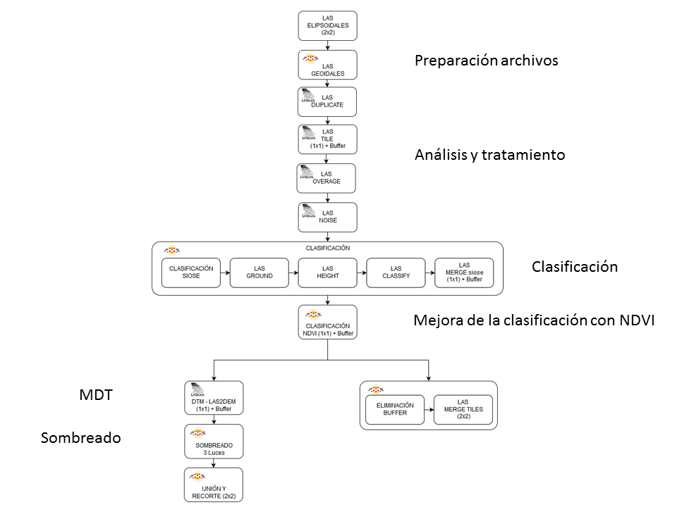

Introducción
La irrupción del LiDAR (Light Detection And Ranging), ha revolucionado la captura de datos en el ámbito cartográfico, al permitir la adquisición de información altimétrica de la superficie en forma de nube tridimensional de puntos.
Esta tecnología que integra un barrido láser, junto con sistemas de posicionamiento preciso GNSS (Global Navigation Satellite Systems) y un Sistema Inercial de Navegación INS (Inertial Navigation System), permite medir la distancia relativa desde un emisor láser a un objeto o superficie, con el fin de representar espacialmente la forma del terreno y los elementos que existen sobre él.
Una vez capturada la nube de puntos, es necesario clasificar cada uno de ellos, discriminando los puntos que hacen referencia al suelo, del resto. Este procedimiento se realiza mayoritariamente mediante procesos automáticos de análisis, o bien recurriendo a la edición manual en aquellos casos en los que no es posible realizar una clasificación automática.
Para la correcta definición de los procesos, es necesario tener en cuenta que el resultado está condicionado por los parámetros que definen las propiedades de captura de los puntos (ángulo, dirección de escaneo, altura de vuelo, eje de la línea de vuelo, etc.).
Vuelo LiDAR
Los vuelos para la recopilación de la información LiDAR de la Comunidad Autónoma de La Rioja, se han realizado a lo largo del mes de septiembre de 2016, combinando una captura LiDAR de 2 pulsos /m² junto con imágenes fotográficas oblicuas RGB e infrarrojo cercano.
Características
- Cobertura territorial: 5.034 km² (C.A. de La Rioja).
- Densidad de captura: 2 pulsos/m².
- Fecha vuelo: septiembre 2016.
- Sistema geodésico de referencia: ETRS89.
- Altitudes: altitudes elipsoidales referidas a ETRS89 (Elipsoide GRS80).
- Distribución de bloques: archivos de 2 x 2 km.
- Precisión horizontal nadiral: RMSE (X,Y) ≤ 20 cm.
- Precisión general altimétrica: RMSE Z ≤ 0.15 cm.
-
Imagen fotogramétrica: 0.50 m (rojo, verde, azul e infrarrojo).
** RMSE (Error cuadrático medio)
Metodología
El procesado consiste en la preparación de los archivos LiDAR para su posterior análisis y tratamiento de los datos.
El procesamiento se realiza con la suite de funciones LAStools de Rapidlasso GmbH. Se trata de un conjunto de aplicativos multinúcleo, que se ejecutan en línea de comandos y que se pueden secuenciar mediante scripts, para ejecutar procesamiento por lotes.
El control y gestión de trabajos se ha diseñado mediante la aplicación ETL (Extract, Transform and Load) FME de Safe Software, en la cual se han insertado las llamadas a los procesos de clasificación mediante programación Python.
La información de partida se encuentra en alturas elipsoidales referidas a ETRS89 European Terrestrial Reference System 1989 (Elipsoide GRS80).
Los archivos de datos están expresados en formato LAS (LASer File Format Exchange Activities), estando organizados en cuadriculas espaciales de 2x2 km.
El proceso de clasificación y generación de los modelos digitales del terreno se realiza de acuerdo al siguiente esquema de tareas:
